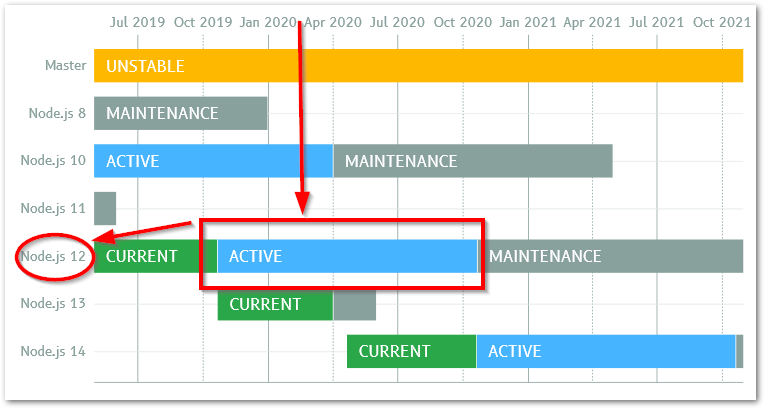

Antora
Antora est la plateforme que nous utiliserons pour compiler/assembler toutes les ressources éditées au format .adoc. Après installation, ce "logiciel" prendra la forme d’une commande à exécuter en ligne de commande, du genre antora <nom-du-fichier-de-config-global-du-site>.yml
|
L’installation d’Antora n’est pas aisée, surtout sur Windows. Risque de confusion avérée entre termes, concepts, objectifs …(node, nvm, lts, choco…) ça rappelle le BIM non ? Merci de (tenter de) suivre & appliquer scrupuleusement les infos ci-dessous, et en cas d’erreur, de faire un retour pour qu’elles soient mises à jour. |
Prérequis Windows
| Les infos ci-dessous font référence à la page Prérequis Antora pour Windows. Si vous lisez le Shakespearien n’hésitez pas à vous y rendre, les informations risqueront d’être plus à jour qu’ici. |
Nous verrons :
-
Comment installer Chocolatey, un installateur de paquets en ligne de commande, reproduisant un environnement logiciel complet.
-
Comment installer Node
Vous avez besoin de passer par ces étapes préalables avant d’installer Antora et de l’utiliser pour générer un site de documentation.
Node
Nous recommandons d’utiliser la version étiquetée "Long Term Support" (LTS) de la version de Node, car Antora est seulement testée sur ces versions spécifiques, voir active LTS releases. Comme nous sommes le 2020-03-14, la version LTS de Node.js est donc node.js v12 (version LTS → numéro pair) 
Vous avez peut-être Node installé, vérifions le en ouvrant PowerShell et en tapant :
node --version
Vous devriez voir des numéros de version, comme :
v12.13.0
Si la commande échoue avec une erreur c’est que Node n’est pas installé. La meilleure façon d’installer Node sur votre machine est avec Chocolatey. Et si vous n’avez pas installé Chocolatey auparavant, allez à Installation de Chocolatey pour l’obtenir et l’installer. Sinon, sautez directement à Installation nvm et Node.
Si la commande renvoie un numéro de version qui n’est pas une version LTS active, upgrader/downgrader à la version LTS de Node la plus récente avec nvm pour assurer une compatibilité maximale avec Antora.
Dans la pratique, ça "marche" aussi avec des versions de Node non LTS…, sur mon ordinateur, la commande node --version me renvoie v13.0.1 et jusque ici, Antora fonctionne… Mais il vaut mieux respecter les directives à la version LTS près!
Si la commande renvoie une version Node LTS active, vous êtes bon pour installer Antora.
Chocolatey
La meilleure façon d’installer Node Version Manager (nvm) et Node est avec Chocolatey, le manageur de paquets pour Windows.
-
Ouvrez un terminal Powershell 7 en mode administrateur (clic-droit sur l’icône et choix Exécuter en tant qu’administrateur)
-
Copier/coller la commande suivante dans le terminal Powershell 7 admin (il faut avoir activé la fonction de copier/coller au préalable, voir la page : configuration ligne de commande
Set-ExecutionPolicy Bypass -Scope Process -Force; iex ((New-Object System.Net.WebClient).DownloadString('https://chocolatey.org/install.ps1'))
Vous êtes maintenant prêts à installer nvm et Node.
Installation nvm et Node
-
Ouvrez un terminal Powershell 7 en mode administrateur (clic-droit sur l’icône et choix Exécuter en tant qu’administrateur)
Si vous venez juste d’installer Chocolatey en suivant les instructions ci-dessous, utilisez le même terminal (exécuté en mode admin) que vous avez déjà ouvert. -
Pour installer Node Version Manager (nvm) pour Windows, entrer la commande suivante dans le terminal :
choco install -y nvm
-
Fermer le terminal.
-
Ouvrir un nouveau terminal, sans droit administrateur, et installer Node avec nvm (qui vient d’être installé juste auparavant).
nvm install 12.13.0
Quand on utilise nvm pour Windows, on doit spécifier le numéro de version exact de Node (e.g., 12.13.0) jusqu’à ce que le problème nvm-windows#214 soit résolu.
Maintenant que Node est installé, on est prêt à installer Antora
Upgrade/downgrade Node en utilisant nvm
Si vous avez installé nvm mais que votre version de Node n’est pas étiquetée "LTS" (doit être débuter par un numéro pair, vérifiable avec node --version), taper la commande suivante dans le terminal :
nvm install 12.13.0
Quand on utilise nvm pour Windows, on doit spécifier le numéro de version exact de Node (i.e. nvm install 12.13.0).
|
Installation d'Antora
Pour générer et publier un site web de documentation avec Antora, on doit disposer des interfaces en ligne de commande Antora et de la suite logicielle permttant la génération de site.
Suppositions :
-
Vous avez installé une version active LTS de Node sur votre machine Windows
Dans cette section, vous apprendrez :
-
Comment installer Antora globalement. (recommandé)
-
Comment installer les paquets ligne de commande Antora et générateur de site dans un répertoire sécifique à un projet.
Nous vous recommandons d’installer Antora à l’échelle globale, surtout si vous gérez plusieurs sites de documentation. Lorsque nous disons «globalement» ici, cela n’implique pas à l’échelle du système (mode Administrateur). Cela signifie l’emplacement où Node est installé. Si vous avez utilisé nvm pour installer Node, cet emplacement se trouvera dans votre répertoire personnel (ne nécessitant donc pas d’autorisations élevées). Cependant, vous pouvez également installer Antora dans un répertoire de projet si vous préférez.
Installer Antora globalement en utilisant npm (niveau : on doit l’atteindre!)
Pour installer globalement (niveau utilisateur seulement) Antora CLI et les packages de générateur de site, ouvrez un terminal et tapez :
npm i -g @ antora / cli @ master @ antora / site-generator-default @ master
le @ au début du nom du package est important.
Il indique à npm que le paquet cli est situé dans le groupe antora.
Si vous omettez ce caractère, npm supposera que le nom du package est le nom d’un référentiel git sur GitHub.
Le second @ compense le numéro de version demandé.
Seuls les segments majeurs et mineurs sont spécifiés pour vous assurer de recevoir la dernière mise à jour du correctif.
|
Vérifiez que la commande antora est disponible sur votre PATH en exécutant:
version antora
Si l’installation a réussi, la commande doit signaler la version d’Antora (où .x représente le dernier numéro de correctif).
antora version master.x
| Si vous utilisez une installation de Node installée en mode administrateur, vous risquez de rencontrer des problèmes d’autorisation lors de l’installation globale des packages. Dans ce cas, vous devrez installer Antora dans un répertoire de projet . |
Installer Antora dans un répertoire de projet (niveau : gourou/freejazz)
Vous pouvez choisir d’installer Antora dans un répertoire de projet, tel que le répertoire où sont stockés les fichiers playbook.yml de votre site.
Lorsque cela est possible, nous vous recommandons d’installer globalement Antora CLI afin que la commande antora soit disponible sur votre PATH.
Vous pouvez ensuite installer les packages du générateur de site dans un répertoire de projet.
Pour installer uniquement la Ligne de commande globalement, tapez:
npm i -g @antora/cli@master
Ou, pour installer la ligne de commande dans un répertoire de projet, accédez à votre répertoire de projet et tapez :
npm i @antora/cli@master
La suppression de l’indicateur -g installe le package dans le dossier [.path] node_modules du répertoire en cours.
Vérifiez que la commande antora est disponible sur votre PATH en exécutant antora -v.
Si vous avez installé le package sans l’indicateur -g, vous devrez préfixer la commande avec (npm bin)/ .
antora version
(npm bin)/antora version
La commande doit signaler la version Antora CLI dans le terminal (où .x représente le dernier numéro de patch).
master.x
Si vous avez installé la CLI globalement, accédez au répertoire du projet avant d’installer le générateur de site.
Ensuite, installez le package du générateur de site.
npm i @antora/site-generator-default@master
Le fichier @ antora / site-generator-default et ses packages dépendants seront installés dans le dossier [.path] node_modules de votre projet.
La commande antora recherchera ces packages avant de chercher dans le dossier d’installation global.